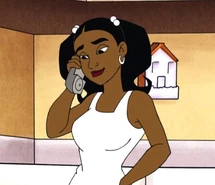

É um estudante afro-americano esperto, atlético e bem-humorado do Colégio Dakota Union. Na explosão acidental conhecida como "Big Bang", ele é exposto a um gás desconhecido e ganha superpoderes eletrostáticos, tornando-se um super-herói. Virgil odeia armas de fogo, já que, cinco anos atrás, sua mãe foi assassinada por uma bala perdida durante um tiroteio de gangues.
Richard Foley/Gear
É o melhor amigo de Virgil. Richie também é afetado pelo gás do Big Bang e manifesta inteligência sobre-humana no decorrer da segunda temporada. Ele ajuda o Super Choque a combater os meta-humanos com a ajuda de seus Zap-caps sua sofisticada mochila.
Robert Hawkins
É o pai de Virgil e diretor do Centro Comunitário Homem Livre. Além disso, é fã do super-herói Soul Power e foi jogador de futebol americano no colégio e professor do jogador de basquetebol Shaquille O'Neal. Robert é rígido, mas bondoso e bastante compreensivo. Ele desconhece a identidade secreta de seu filho por quase toda a série.
Sharon Hawkins

É a irmã mais velha de Virgil e conselheira de jovens no Centro Comunitário Homem Livre. Durante um tempo, Sharon namora Adam Evans, o Homem-Elástico. Ao contrário de seu pai, Sharon não chega a descobrir que seu Virgil e Richie são super-heróis, apesar de que, no episódio "Ato entre irmãos", chega a desconfiar que seu irmão é o Super Choque, porém ele consegue enganá-la com a ajuda de Mirage, uma meta-humana com habilidades de ilusão.
Vilões Metahumanos( Um pouco sobre seus poderes):
Francis Stone/Raio de Fogo
Pirocinese: Capacidade de controlar a energia cinética dos átomos para gerar, controlar ou absorver fogo pelas mãos.
Ivan Evans/Ebon
Mimetismo Sombrio: Habilidade de transformar seu próprio corpo em sombra e se juntar a ela.
Umbracinese: Habilidade de controlar as sombras, poder materializada e poder criar portais para outras dimensões
Teresa/Talon
Grito Super-Sônico: Habilidade de amplificar a voz e gritar tão intensamente que seu grito pode quebrar objetos e ensurdecer pessoas.
Voo: Possui um par de asas que permitem-lhe que voe.
Garras Afiadas: Suas unhas crescem consideravelmente.
Shiv
Projeção de Armas: Capacidade de transformar energia de luz em suas mãos para criar diversas armas de batalha como facas, machados e até pequenas armas arremessáveis.
Carmen Dillo
Característica do Tatu: Seu corpo lembra o corpo de um tatu podendo se enrolar e se mover como uma bola.
Puff
Pode transformar seu corpo em gás e criar um gás através de sua saliva a ponto de deteriorar madeira e metal.
Onyx
É um gigante invulnerável.
Madelyn Spaulding
Telepatia(Perdida): Pode ler pensamentos e projetar imagens mentalmente.
Controle Mental(Perdida): Habilidade de controlar as ações ou o raciocínio dos outros.
Telecinese: É capaz de levitar, quebrar e mover objetos e pessoas somente com a força mental.
Kangor
Crescimento Ósseo: Conhecido como pé grande Kangor possui um exagerado crescimento de massa óssea e muscular de ambas as pernas, fazendo com que seus pés fiquem gigantes.
Aqua-maria
Hidrocinese: Capacidade de criar e manipular o elemento água.
Furão
Olfato Aguçado: Capacidade de sentir qualquer cheiro a distâncias extremas, sabendo o cheiro de uma pessoa.